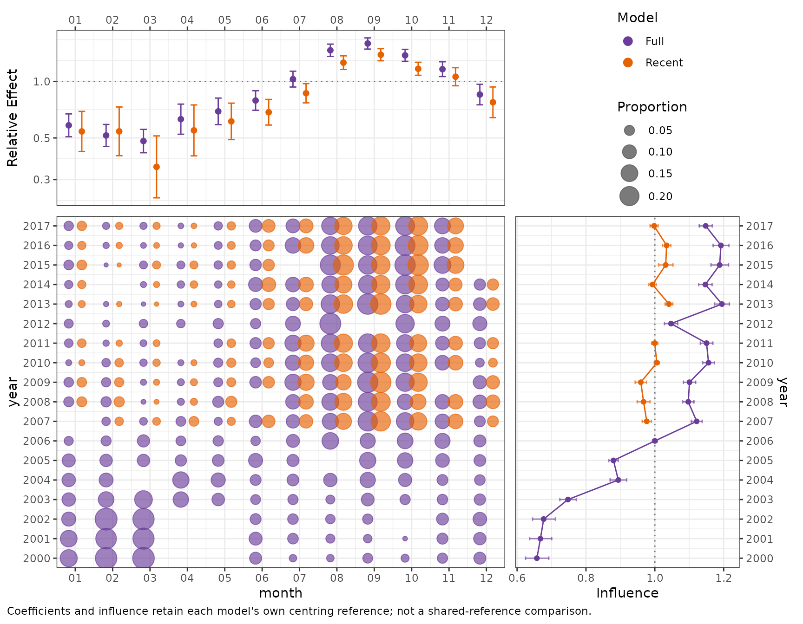
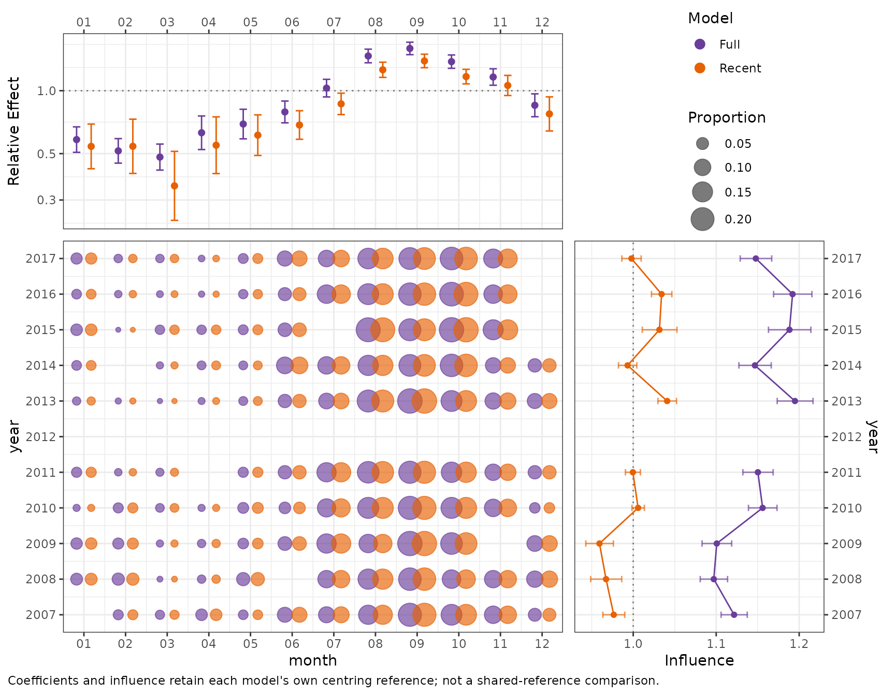
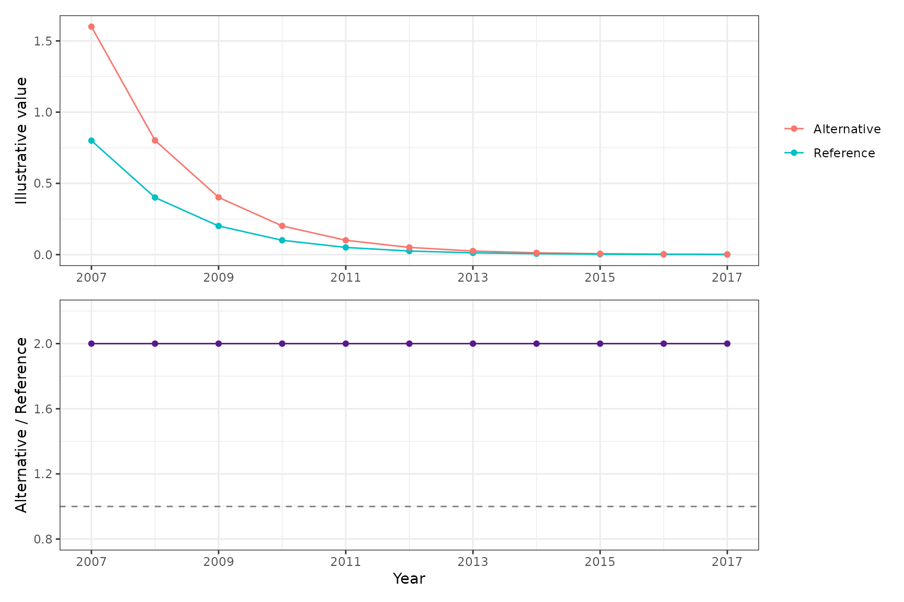
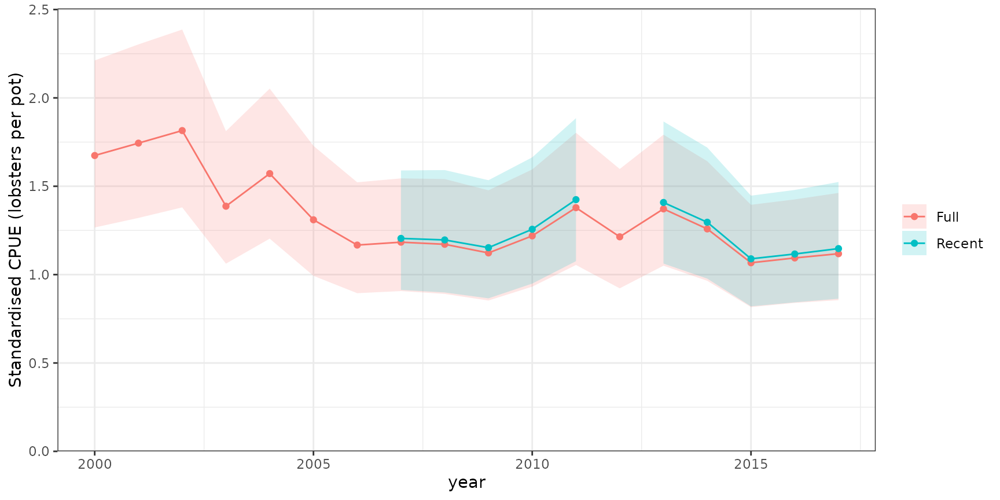
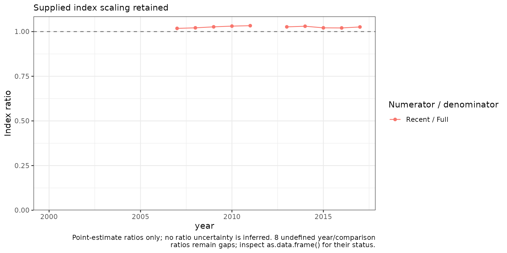
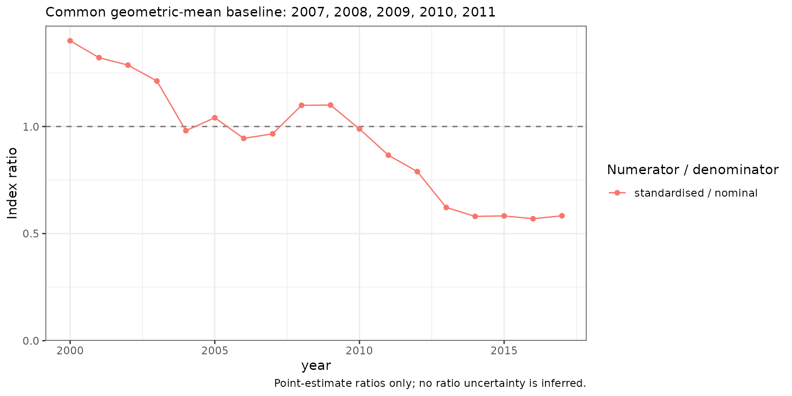

Two runs, one CDI display
An influence comparison asks whether two model runs tell the same
story about the effect of a covariate, its sampled distribution, and its
contribution to the annual index. plot_cdi() overlays the
runs within the same CDI panels: it does not place two
complete displays beside one another. Colours identify the model
throughout. Coefficients and distribution bubbles are slightly dodged,
and influence lines share the same year axis.
This article uses the same simulated lobsters_per_pot
observations as the main article. We fit a
negative-binomial model to the full 2000–2017 series, and another to
observations from 2007 onwards. We also omit 2012 from the second run to
demonstrate an internal gap. Removing a year is only a display example,
not a recommendation for model selection.
data(lobsters_per_pot)
full_data <- lobsters_per_pot
year_number <- as.integer(as.character(full_data$year))
recent_data <- droplevels(full_data[
year_number >= 2007 & year_number != 2012, ])
full_model <- glmmTMB::glmmTMB(
lobsters ~ year + poly(depth, 3) + poly(soak, 3) + (1 | month),
family = glmmTMB::nbinom2(), data = full_data
)
recent_model <- glmmTMB::glmmTMB(
lobsters ~ year + poly(depth, 3) + poly(soak, 3) + (1 | month),
family = glmmTMB::nbinom2(), data = recent_data
)
stopifnot(full_model$fit$convergence == 0, full_model$sdr$pdHess,
recent_model$fit$convergence == 0, recent_model$sdr$pdHess)Both models have a monthly random intercept. We calculate each
diagnostic once; changing the display does not refit models or
recalculate uncertainty. Random effects are stored as one term per
grouping factor, named after the factor, so the monthly random intercept
is the term "month".
full_diagnostic <- influ(full_model, focus = "year")
recent_diagnostic <- influ(recent_model, focus = "year")
diagnostics <- list(Full = full_diagnostic, Recent = recent_diagnostic)Different year ranges and missing years
The default years = "union" retains the full calendar
range. The recent run has no bubbles or influence estimates before 2007
or in 2012. A missing year is not a zero, and its influence line is not
connected across the gap. Months are matched by their labels, rather
than their positions in a table. Bubble area uses one common proportion
scale for both runs.
plot_cdi(diagnostics, term = "month", years = "union")
Overlaid monthly coefficient-distribution-influence displays for the full 2000–2017 lobster model and a recent-period model fitted to 2007–2017 with 2012 omitted. Model colours identify two coefficient sets, dodged distribution bubbles, and influence lines within the same panels. Coefficients and influence retain each model’s own reference distribution; they have not been re-centred to a common reference. Bubble area represents the within-year proportion of that model’s records, using a shared size scale. Missing years remain blank, without an influence line across the internal gap.
The model labels are taken from the named list. A single diagnostic
is also accepted, so
plot_cdi(full_diagnostic, term = "month") keeps the
ordinary single-run display. The existing
plot(full_diagnostic, type = "cdi", term = "month") remains
available.
years = "overlap" restricts the view to years available
in every run. It is a display filter, not a refit or a
new calculation of the reference distribution. The omitted 2012 still
occupies its calendar position, so the remaining years are not presented
as an uninterrupted sequence.
plot_cdi(diagnostics, term = "month", years = "overlap")
The same stored monthly CDI results restricted to years shared by both model runs. Coefficient estimates and reference distributions are unchanged from the union display. The missing 2012 is not interpolated or treated as zero; the common year axis preserves that gap.
What is comparable?
The monthly relative effects are centred using the reference already stored in each diagnostic. Because the runs use different observations, their references can differ. The display makes this explicit: an apparent vertical shift is not automatically a change in the seasonal relationship. A genuinely shared reference must be defined when calculating the diagnostics, using compatible reference observations and weights. Plotting compact summaries cannot recover the joint information needed to re-centre their uncertainty.
Compare the same term, component, and effect scale. An encounter effect on the log-odds scale is not interchangeable with a positive-component response ratio. Categorical labels must identify the same strata in every run. Continuous covariates need compatible evaluation grids or bin definitions: matching rounded labels alone does not establish that compatibility.
Random-effect strata must also have verified grouping and level identifiers. If an older diagnostic stores only an aggregate of fitted random-effect values, recalculate it from a supported model before overlaying it. A numeric random-effect value is not a stable stratum identifier across model runs.
A separate index-ratio diagnostic
Overlaid index lines can conceal a substantial proportional
difference, particularly when both series decline towards zero.
index_ratio() answers a separate question: how
large is one annual estimate relative to a named reference
series? plot_index_ratio() displays those ratios
against a line at one. It is independent of the CDI layout.
Why ratios can help near zero
This deliberately constructed arithmetic example is not a
fitted model: one series is exactly twice the other in every
year. Near the bottom of an ordinary response-scale plot, the two lines
look close together even though the proportional difference has not
changed. The ratio retains that information. These values are used only
to explain the display; the worked index_ratio() example
below uses actual calculated model indices.
declining <- data.frame(Year = 2007:2017,
Reference = exp(seq(log(0.8), log(0.0008), length.out = 11)))
declining$Alternative <- 2 * declining$Reference
declining$Ratio <- declining$Alternative / declining$Reference
stopifnot(all(declining$Ratio == 2))
declining_long <- rbind(
data.frame(Year = declining$Year, Value = declining$Reference,
Series = "Reference"),
data.frame(Year = declining$Year, Value = declining$Alternative,
Series = "Alternative")
)
overlay_example <- ggplot(declining_long, aes(Year, Value, colour = Series)) +
geom_line() + geom_point() +
scale_x_continuous(breaks = seq(2007, 2017, by = 2)) +
scale_y_continuous(limits = c(0, NA)) +
labs(x = NULL, y = "Illustrative value", colour = NULL)
ratio_example <- ggplot(declining, aes(Year, Ratio)) +
geom_hline(yintercept = 1, linetype = 2, colour = "grey50") +
geom_line(colour = "purple4") + geom_point(colour = "purple4") +
scale_x_continuous(breaks = seq(2007, 2017, by = 2)) +
scale_y_continuous(limits = c(0.8, 2.2)) +
labs(x = "Year", y = "Alternative / Reference")
patchwork::wrap_plots(overlay_example, ratio_example, ncol = 1)
An illustrative arithmetic example, not fitted model output. The alternative series is exactly twice the reference throughout a thousand-fold decline. Their absolute separation becomes visually small near zero in the upper panel, but the lower panel shows the unchanged ratio of two. The horizontal line at one denotes equal values, not a significance threshold.
Compare calculated model indices
First, calculate expected-response CPUE indices for the two models. Both use the same median depth and 24-hour soak profile, with the monthly random effect set to zero. This is a fixed reference profile, not an average over random months, and not an area-integrated abundance estimate. The units and definition are therefore directly comparable without normalising the series.
reference <- data.frame(depth = median(full_data$depth), soak = 24)
full_index <- cpue_index(
full_model, year = "year", reference_data = reference,
units = "lobsters per pot"
)
recent_index <- cpue_index(
recent_model, year = "year", reference_data = reference,
units = "lobsters per pot"
)
indices <- list(Full = full_index, Recent = recent_index)
plot_compare(indices)
Standardised expected lobsters per pot for the full and recent model runs, using the same depth and soak-time reference profile and monthly random effect zero. Ribbons are pointwise 95% intervals for each index separately, not uncertainty in their difference or ratio. The recent run has a shorter time range and no 2012 estimate.
recent_to_full <- index_ratio(indices, reference = "Full")
recent_to_full
#> <influ_index_ratio>
#> Comparisons: 1
#> Normalisation: none
#> Uncertainty: point estimates only
#> year numerator denominator numerator_estimate denominator_estimate
#> 2000 Recent Full NA 1.673923
#> 2001 Recent Full NA 1.743975
#> 2002 Recent Full NA 1.815094
#> 2003 Recent Full NA 1.387062
#> 2004 Recent Full NA 1.571724
#> 2005 Recent Full NA 1.310247
#> 2006 Recent Full NA 1.167229
#> 2007 Recent Full 1.204896 1.183518
#> 2008 Recent Full 1.196226 1.171575
#> 2009 Recent Full 1.152567 1.122705
#> 2010 Recent Full 1.256600 1.219189
#> 2011 Recent Full 1.424325 1.378792
#> 2012 Recent Full NA 1.213956
#> 2013 Recent Full 1.408274 1.371927
#> 2014 Recent Full 1.296345 1.258616
#> 2015 Recent Full 1.089492 1.067027
#> 2016 Recent Full 1.116675 1.094303
#> 2017 Recent Full 1.147245 1.118282
#> numerator_display denominator_display ratio status
#> NA 1.673923 NA missing_numerator
#> NA 1.743975 NA missing_numerator
#> NA 1.815094 NA missing_numerator
#> NA 1.387062 NA missing_numerator
#> NA 1.571724 NA missing_numerator
#> NA 1.310247 NA missing_numerator
#> NA 1.167229 NA missing_numerator
#> 1.204896 1.183518 1.018063 ok
#> 1.196226 1.171575 1.021041 ok
#> 1.152567 1.122705 1.026598 ok
#> 1.256600 1.219189 1.030685 ok
#> 1.424325 1.378792 1.033024 ok
#> NA 1.213956 NA missing_numerator
#> 1.408274 1.371927 1.026493 ok
#> 1.296345 1.258616 1.029976 ok
#> 1.089492 1.067027 1.021053 ok
#> 1.116675 1.094303 1.020444 ok
#> 1.147245 1.118282 1.025899 ok
plot_index_ratio(recent_to_full)
Annual recent-run CPUE divided by the full-run CPUE, using estimates in the same response units and the same fixed reference profile. Ratios above one mean that the recent run estimates higher CPUE. Only matching observed years can produce a ratio; years before the recent run and its omitted 2012 remain unavailable. These are point-estimate ratios, without a ratio confidence interval.
The calculation joins year labels, not row numbers. It does not extend a shorter series, interpolate absent estimates, or replace zero denominators with a small arbitrary constant. Missing or undefined ratios are reported in the compact result rather than silently turned into observations.
The two fits share observations. Their index errors are therefore generally dependent. Dividing the limits of two marginal confidence intervals would not give a confidence interval for their ratio; this diagnostic deliberately does not do so.
Standardised versus nominal CPUE
The influence object’s standardised series is a centred
year-effect contrast. Its nominal series is the
observed annual mean response. Those are not already in identical units.
To compare their relative shapes, request
normalise = "common" explicitly, using the same
nominated years for both geometric-mean denominators. This
normalisation is separate from the reference used to calculate influence
or expected-response CPUE.
standardised_to_nominal <- index_ratio(
full_diagnostic, series = c("standardised", "nominal"),
reference = "nominal", normalise = "common",
baseline_years = as.character(2007:2011)
)
plot_index_ratio(standardised_to_nominal)
The full model’s standardised year-effect contrast divided by nominal annual mean lobsters per pot, after each series is divided by its geometric mean over the same 2007–2011 baseline period. This compares relative trajectories, not absolute response units. Values above one mean that the standardised trajectory is higher relative to its common-period geometric mean than the nominal trajectory. No ratio uncertainty is implied.
Normalising each run over its own full, different time range can
manufacture a difference in scale. If relative scaling is required for
several model runs, use normalise = "common" and nominate
an agreed baseline available in all of them. If absolute CPUE units are
comparable and relevant to the question, retain the default
normalise = "none" instead.
Reuse the calculated results
The CDI diagnostics, CPUE indices, and ratio diagnostic are calculated objects. Reprinting them or changing plot labels, colours, or layout does not fit another model, run MCMC, or regenerate an observation-by-simulation matrix. See CPUE indices for annual tables, joint covariance, and area integration, and Model search for constrained searches whose selected native fit can feed these interfaces.